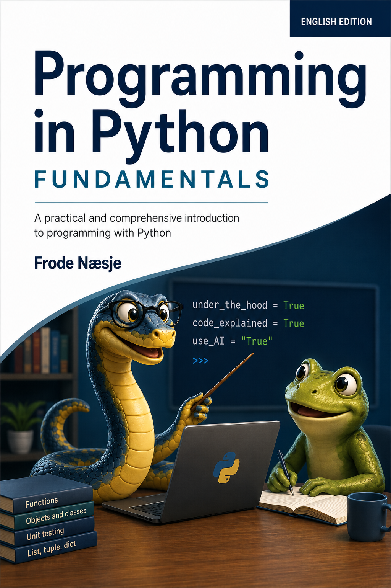
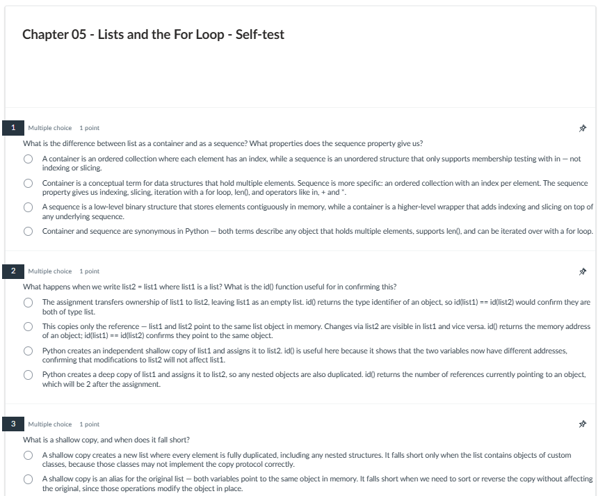

Students and self-learners
Follow a clear path from the first programs to more advanced Python concepts, with review questions and practical exercises along the way.
A university-level Python textbook
Programming in Python is written for self-study and classroom teaching. A textbook for students who want to understand what their code actually does - with checkpoints and exercises that help instructors verify that students have learned what they should.

Why this book?
Many Python books are organised around building applications. That can be a good approach when the goal is to complete a specific project. This book has a different purpose.
It is designed as a structured textbook for programming education, where students need clear progression, opportunities to test their understanding, and exercises that gradually build competence.
Throughout the book, we occasionally lift the hood to see what Python is actually doing. These moments are meant to make the language more interesting, more memorable, and easier to understand.
Designed for
Follow a clear path from the first programs to more advanced Python concepts, with review questions and practical exercises along the way.
Use a textbook structure with learning objectives, checkpoints, exercises, and resources that support assessment and teaching.
A dedicated perspective helps readers coming from languages such as C++, Java, or C# understand what is different in Python.
What is inside?
Previews
Download sample PDFs to get a feel for the book's content and style.
An overview of all 14 chapters and appendices.
Download PDFSample chapter review questions with model answers.
Download PDFFull back cover text with author bio.
Download PDFClassroom slides from one chapter, in the style used for teaching.
Download PDFStudent resources
The public repository contains source code examples, exercise material, selected solutions, review questions, and hints for writing more Pythonic code.
Instructor resources
A separate instructor repository includes:
For access or questions, contact frode.nasje@gmail.com.
All chapters include multiple choice questions with carefully crafted distractors, packaged for direct import into Canvas.

Author
Frode Næsje teaches programming and computer science topics at university level. This book reflects years of classroom experience and a strong interest in helping students understand what their code does.